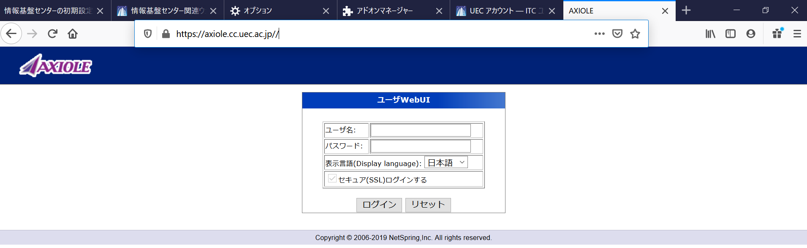
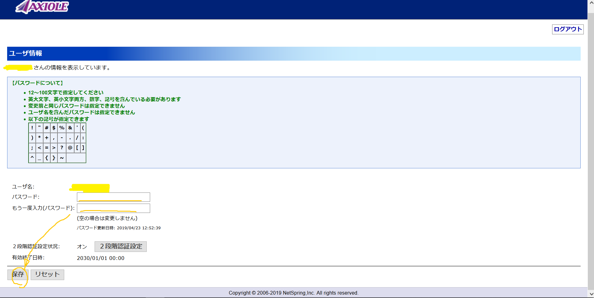

Lunatic電通生もっちゃんの部屋
STEP 4 2要素認証を設定する
まず、先ほど設定したFirefoxで、パスワード変更画面（https://axiole.cc.uec.ac.jp//）にアクセスしてください。
この画面がでてきたら、自分のUECアカウントと先ほど設定したパスワード（以下、パスワード）を入力してください。その後、「ログイン」を押してください。
先ほどのStepの画像の使いまわしなのは置いといて、「2段階認証の設定」をクリックします。
この先の画面は個人情報の塊なので例示を見せることはできませんが、自分のスタイルにあったものを1つ選択してください。
「使用しない」は絶対に選択しないでください。2019年12月よりこの2要素認証は必須となっています。
この後、動作確認画面に行くので、確認してください。「2段階認証の設定」ボタンの右に「成功しました」などの文字が出れば成功です。下の「保存」ボタンをおしてから、右上の「ログアウト」を選択して画面を閉じてください。（Powershellを設定した人はそのまま開きっぱなしです）